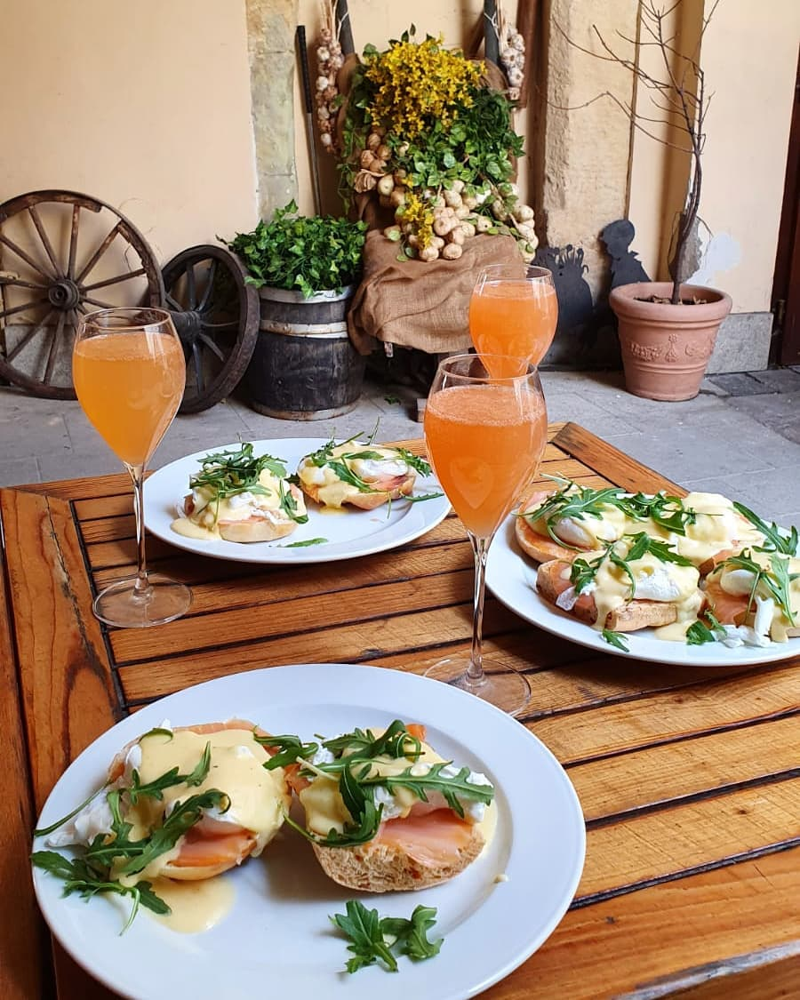

Holandská omáčka podľa @tlapickaaa — Normy Jedál
Nekonečně radosti, když se podaří 4 porce nesražený, krásně krémový holandský, benedikti tak akorát, měkoučký péčo a ještě to donést na dvorek teplé. 👌
#eggbenedict#vejcebenedikt#snidane#brunch#nedelnisnidane#vikendovasnidane#snidanenazahrade#vejce#vajicka#mimosa#holandskaomacka#prosecco